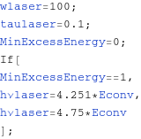
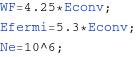
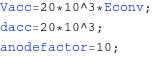
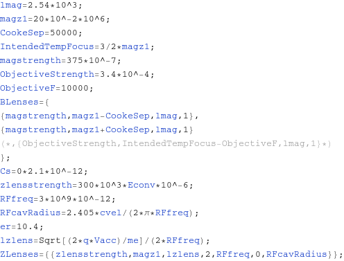
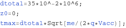
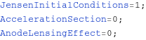

Enter parameters in this section:
(In units m=1, q=1, μm, ps;
use conversion factor Econv for voltages and energies (entered in V and eV (otherwise MKS)) )
Laser parameters as HW1/e:

Photocathode material parameters:

Gun parameters:

Lensng Elements:
Set the lens' strength(s), location(s), length(s), and SuperGaussian order(s) (also freq, phase and radius for RF Cavities) respectively in nested lists:

Set initial conditions for overall propagation:

Set the parameters below to 1 if desired.
Note: JensenInitialConditions is forced if deltaE=0.
Note: AnodeLensingEffect is disabled if AccelerationSection=0. :
